组合图形是由两个以上的简单的几何图形组合而成的。
计算组合图形的面积，一般要先转化为几个简单图形，转化的方法有：分割法、添补法、割补法、顺向组合法、逆向分拆法、综合法等。
例1 计算下面图形的面积，你能想出几种方法？
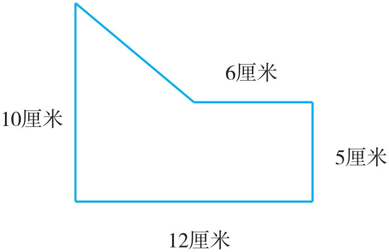
方法一：分成一个梯形和一个长方形。
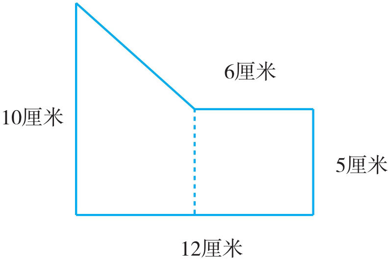
方法二：分成一个三角形和一个梯形。
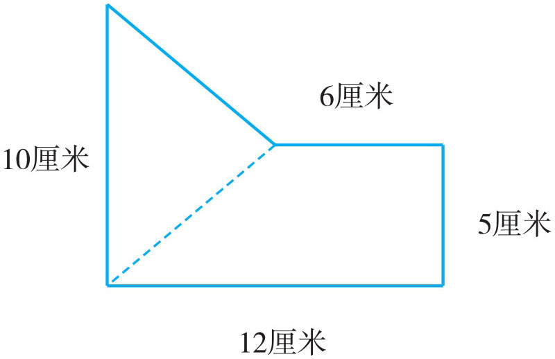
方法三：分成一个长方形和一个三角形。
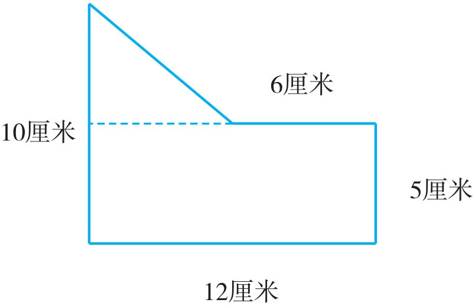
方法四：图形外做辅助线，添补成一个大长方形。
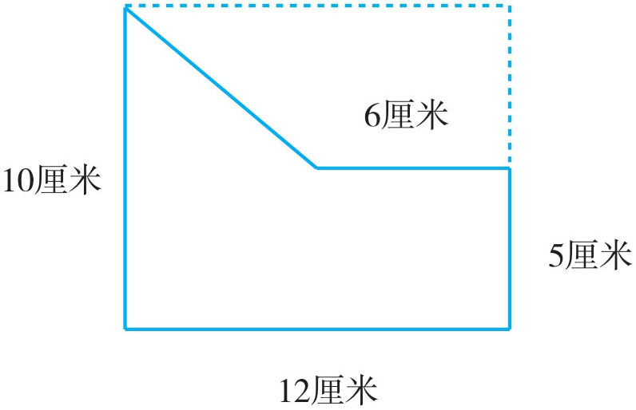
方法一：梯形的面积：(5+10)×(12-6)÷2=45（平方厘米）长方形的面积：6×5=30（平方厘米）
整个图形的面积：45+30=75（平方厘米）
方法二：梯形的面积：(6+12)×5÷2=45（平方厘米）
三角形的面积：10×(12-6)÷2=30（平方厘米）
整个图形的面积：45+30=75（平方厘米）
方法三：长方形的面积：12×5=60（平方厘米）
三角形的面积：(12-6)×(10-5)÷2=15（平方厘米）
整个图形的面积：60+15=75（平方厘米）
方法四：长方形的面积：12×10=120（平方厘米）
多余的梯形面积：(12+6)×(10-5)÷2=45（平方厘米）
原图形的面积：120-45=75（平方厘米）
例2 在四边形ABCD 中，M 为AD 的中点，N 为BC 的中点，如果四边形ABCD 的面积为120平方厘米，求阴影部分ANCM 的面积。
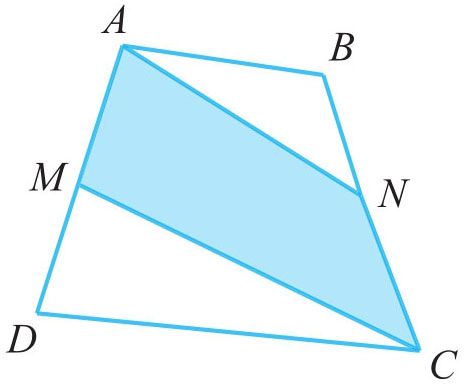
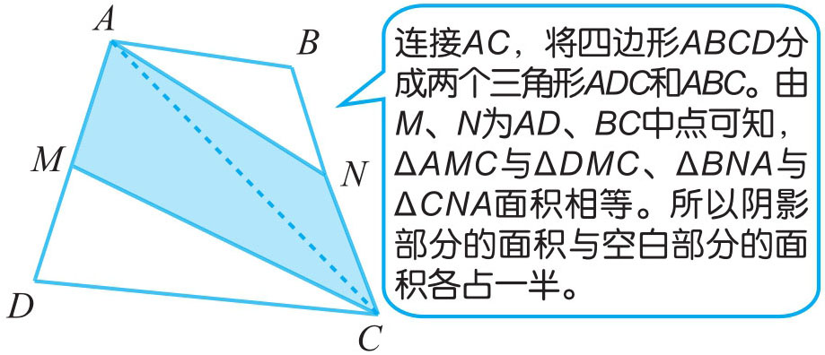
120÷2=60（平方厘米）
答：阴影部分ANCM
的面积为60平方厘米。
例3 下图中ABDE 是一个长方形，三角形ABC 的面积是48平方厘米，AB 长8厘米，DF 长7厘米。求阴影部分的面积。
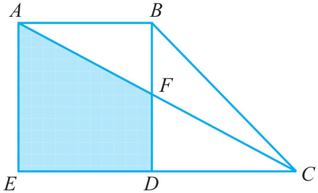
阴影部分是一个梯形，我们可以从两个角度去思考，一种就是直接利用梯形的公式进行计算；一种是用长方形的面积减去三角形的面积。思考发现，无论采用哪种方法去计算，都要先通过长方形的面积求出长方形的一条长边。因此求长方形的面积是关键，通过观察发现，三角形ABC 与长方形ABDE “等底等高”，则长方形ABDE 的面积是三角形ABC 面积的2倍。
方法一（直接利用梯形的公式计算）：
长方形的长边=48×2÷8=12（厘米）
梯形的面积=(7+12)×8÷2=19×8÷2=76（平方厘米）
答：阴影部分的面积为76平方厘米。
方法二（用长方形的面积减去三角形的面积）：
长方形的面积=48×2=96（平方厘米）
BF 的长=96÷8-7=5（厘米）
梯形的面积=96-5×8÷2=96-20=76（平方厘米）
答：阴影部分的面积为76平方厘米。
1．请计算下面这面队旗的面积是多少平方厘米？
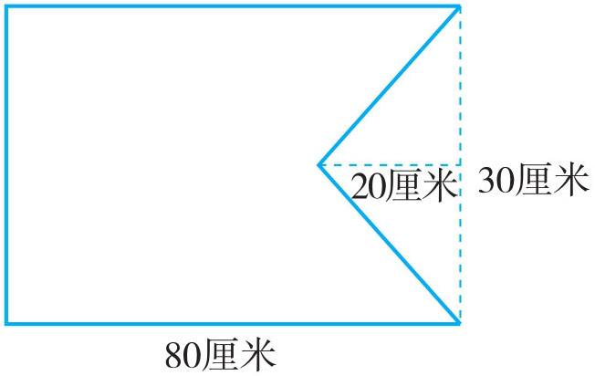
2．学校操场有一块绿化地，形状如下图，请计算它的面积是多大？
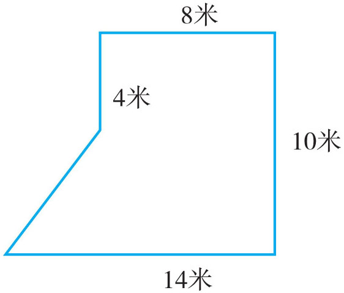
3．有一块橡皮垫，形状如下图，你能用两种方法计算它的面积吗？
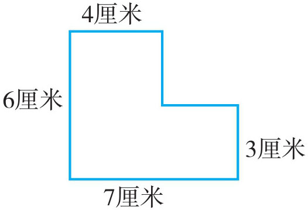
4．下图是一个机器零件的横截面，请计算出它的面积。
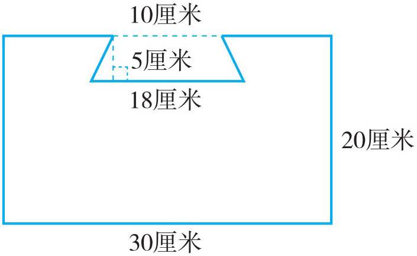
5．如图所示，在一个梯形草坪中有一条平行四边形的水泥路，草坪的面积是多少平方米？
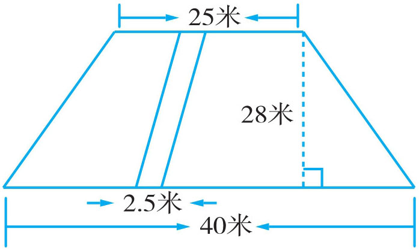
6．如图，已知梯形ABCD 的上底为6厘米，下底为10厘米，高为8厘米，它是三角形FGC 面积的5倍。平行四边形FGDE 的面积是多少平方厘米？
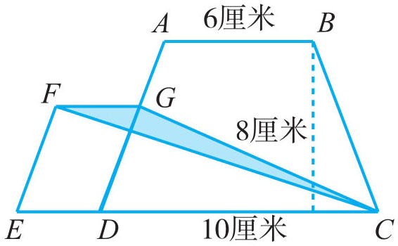
7．在四边形EFCD 中，A 为ED 边上的中点，B 为FC 边上的中点，如果EFCD 的面积为362.8平方厘米，求阴影部分的面积。
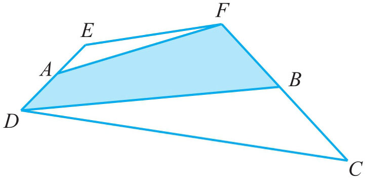
8．在一个公园中，有一个边长为10米的正方形花坛，花坛的周围是一个2米宽的小路，求小路的面积。（至少三种方法）
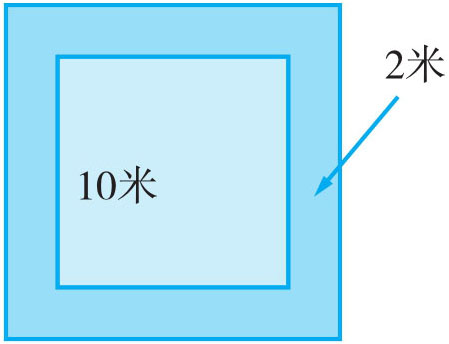
9．在长方形ABED 中，AB 为7厘米，AD 为16厘米，点F 是BE 的中点，求三角形CEF 的面积。
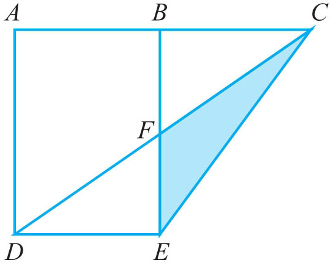